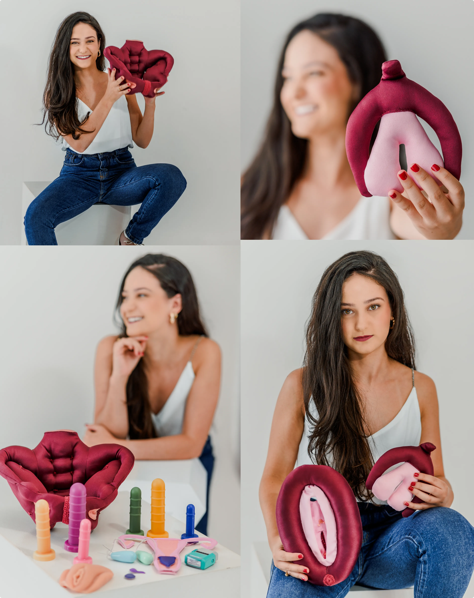

Sobre Mim
Sou apaixonada pelos temas de saúde pélvica de mulheres e gestantes. Meu propósito é transformar vidas, auxiliando na melhora da dor nas relações sexuais, incontinências urinária e fecal, e na preparação para um parto mais tranquilo e especial. Sempre com ética, responsabilidade e compromisso com a ciência.
Quem Sou Eu
anos, gaúcha
Apaixonada por pets
Ex-atleta, hoje Crossfit
Leitora ávida
Ama Viagens, natureza e aventuras
Viciada em Chimarrão

Meus Serviços
Preparação para Parto
Preparação completa para parto e recuperação pós-parto
Reabilitação Pélvica
Fortalecimento e reabilitação da musculatura pélvica
Tratamento Incontinência
Tratamento especializado para incontinência urinária e fecal
Saúde Íntima
Melhora da dor em relações sexuais e saúde íntima
Saúde Feminina
Cuidado integral da saúde íntima feminina
Depoimentos
"Fisioterapeuta maravilhosa, recomendo muito!!"- M.B.
"Excelente profissional, extremamente simpática, querida, te auxilia em tudo que precisas. Não me senti envergonhada em nenhum momento, pois ela trata todo o processo com leveza e respeito, super recomendo"- M.K.
"Resultados excelentes! Minha qualidade de vida melhorou muito."- C.R.
Cuide da sua saúde íntima com quem entende do assunto
Vamos juntas nessa jornada?